Same four core features, half the decisions on every screen
A study of the staging web app, screen by screen, with what to keep, merge or remove marked on each, and draft screens of the simplified version. Nothing has been changed in the code yet: this document is the plan to agree on first.
Draft · awaiting decisions D1–D7 · no code changed
7 → 2ways to start creating a session from Home
9 → 3sections on Home after sign-in
6 → 3places that show progress and analytics
Hidden → 4main navigation: a hamburger drawer becomes four visible tabs
ScopeConsumer web app (staging, design v4) at 402 px, the mobile frame
BriefEugene, 25 Oct: “feel more simple, without removing too much of the core features”
Date25 October 2026 · prepared for Daniel and Eugene
1Summary
The app does not have too many features. It has too many doors to the same features, and it opens them all at once. Seven ways to start a session sit on Home. Progress shows up on six screens under four names. Coins appear in nearly every header. The main navigation hides behind a hamburger. A signed-in user still scrolls past the sign-up pitch.
The plan organises the app around the four core features Eugene named, one place each, and closes the duplicate doors. No core feature is removed (section 6 lists where every feature ends up). It ships as design version v5 on staging, so it can be compared with v4 side by side, and production stays unchanged until it is approved.
The organising idea: four core features, four tabs
CreateChat with Aurelia that builds sessions chapter by chapter. Home becomes this.
DiscoverCommunity-driven AI generations: creators, profiles, recreate, live, challenges.
ProgressAnalytics to follow performance, plus Data sources: the third-party ecosystem that feeds it.
Every consumer screen of the staging build (design v4, signed in, 402 px) was captured, 23 screens in all (appendix A), and counted for entry points, repeated content and naming. Each finding below is marked on the real screen in one of three colours:
Remove from this screen (the feature lives on elsewhere, or the element is noise for a signed-in user)Merge or move into the one place that owns itKeep, and make it the primary thing
The drafts are the live app with elements hidden, relabelled or added in the browser, not redesigned mock-ups. They show structure, not final visual design, which needs a Figma pass (D7). Counts are from the screens as built.
Measure
Today
Proposed
Where the difference goes
Ways to start creating from Home (Ask, feeling chips, Quick Start, “Start your Journey”, “Get Started”, Recreate cards, drawer “New session”)
7
2
Ask (with feeling chips as starters) and the Create tab. Quick Start becomes example prompts. Recreate moves to Discover.
Sections on Home when signed in
9
3
Ask, “Continue where you left off”, and “For you from the community”. The marketing blocks stay for signed-out visitors only.
Screens showing progress or analytics (My Wellness, Analysis, the player's progress drawer, the Insights page with 3 tabs, session version history, profile stats)
6
3
Progress tab → Analysis page → player peek. Version history lives only in Session details.
Main navigation entries visible without opening a menu
0
4
The drawer's 9 items become 4 tabs. Invite, Help and Settings move into Me.
Screens with a coin balance in the header
~10
1
Me → Credits & plan. Earning moments (invite, challenge) still show coins in context.
Ways to change a session in the chat (suggestion chips, the deck, the “+” sheet), from 2 different lists
3
1
One list of changes, opened from the deck or “+”, with one selection (open item O12).
Every move between the core features is two taps, and nothing tells a new user they exist.
→
Proposed: bottom tab bar (4 items)
Create: Ask, continue, recent chats
Discover: was Explore, plus the live map
Progress: was My wellness (goals and data sources)
Me: profile, Library, credits, invite, notifications, settings, help
One tap between core features, always visible. The chat and the player stay full-screen and hide the bar.
Today · drawer
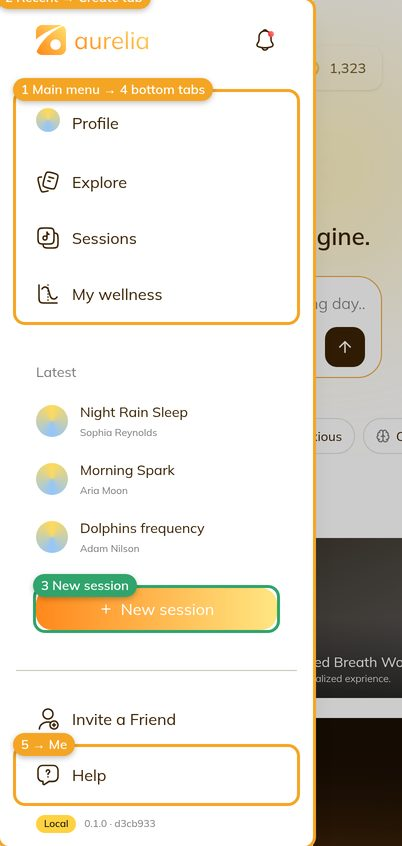
MergeThe four destinations become the tab bar. They are the app's map; hiding them makes the product feel smaller and harder at the same time.
MergeLatest becomes “Recent” on the Create tab, where you would look for a conversation.
KeepNew session stays one tap away, on the Create tab.
MergeInvite a Friend and 5 Help move into Me with Settings, Credits and Notifications: account things in one place.
This is a mobile layout change. The standing rule freezes the 402 px layout unless asked. That is why it is decision D1, and why it would ship as v5 on staging first.
4Screen by screen
4.1 Home → the Create tab
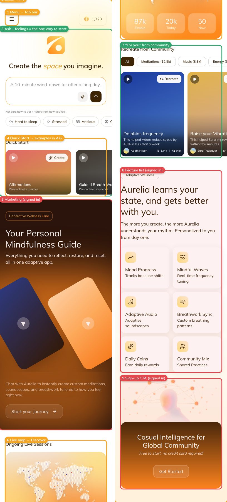
Today's Home after sign-in, the whole page in two halves (left = top, right = bottom).
Draft · Create
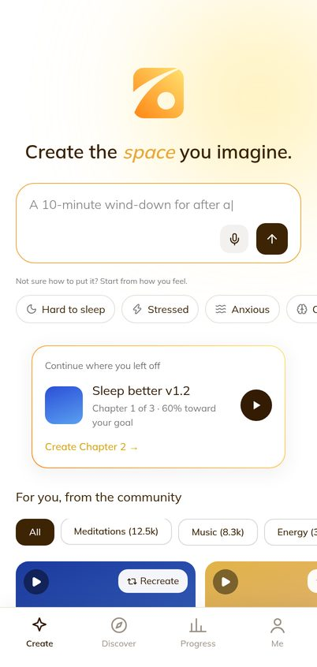
Merge Menu → tab bar, and 2 coins → Me (section 3).
KeepAsk + feeling chips become the one way to start. They already write a brief Aurelia answers properly (U036/U047).
MergeQuick Start: its cards become example prompts that rotate in the Ask field (the typewriter already exists).
Remove“Your Personal Mindfulness Guide”, 8 the feature list and 9 “Free to start, no credit card”: they sell the app to someone already inside it. They stay for signed-out visitors.
MoveLive sessions map → Discover.
KeepRecreate from Community, renamed “For you, from the community”: one shelf, not three.
NewContinue where you left off: the session being worked on, its chapter and progress, Play, and “Create Chapter 2”. This is the chapter loop made visible.
4.2 Explore → Discover
Today · Explore
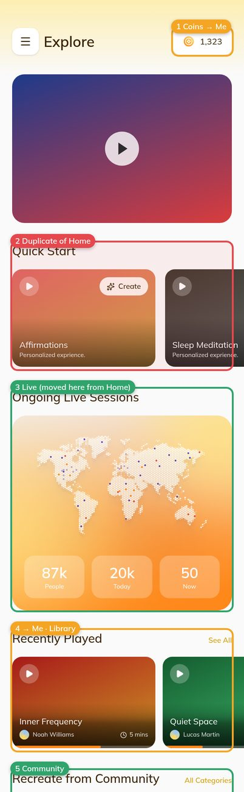
Draft · Discover
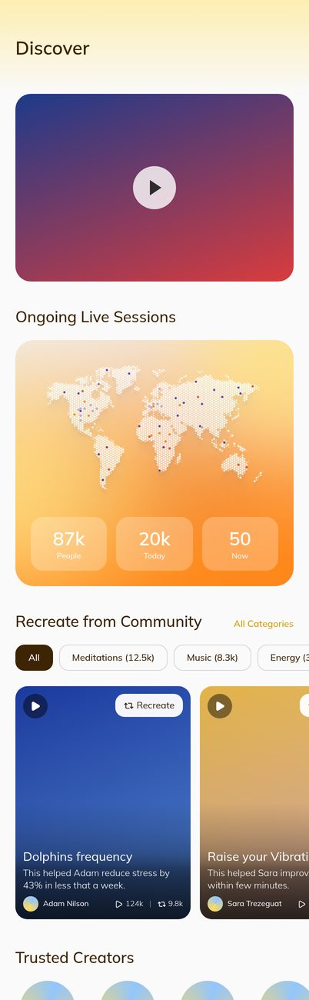
Merge Coins → Me.
RemoveQuick Start: it duplicates Home. Discovering other people's work and starting your own are different jobs.
KeepLive sessions, moved here from Home: it is a community signal.
MoveRecently played → Me → Library → Played. It is your history, not discovery.
KeepRecreate from Community, 6Trusted creators (profiles) and 7Monthly challenge. This is core feature 1.
Discover keeps every community feature: generations, recreate, profiles, live, challenge. It loses only what belongs to another tab.
4.3 My Wellness → Progress (analytics + data sources)
Today · My Wellness
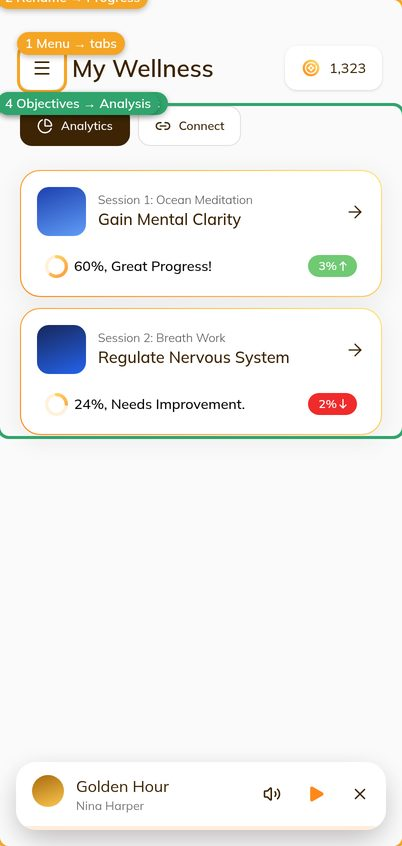
Draft · Progress
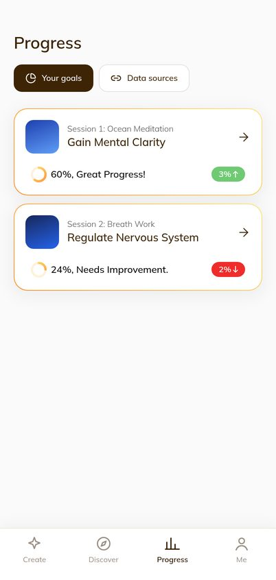
Merge Menu → tabs.
Rename“My Wellness” → “Progress”: the word people use for “how am I doing”, and one name instead of four (My Wellness, Analytics, Insights, Analysis).
Keep The two tabs, named for what they hold: Your goals and Data sources (was Connect). The third-party ecosystem lives next to the analytics it feeds, so connecting a source has a visible reason.
Keep One card per objective → the Analysis page (U039), which becomes the only deep analytics view.
4.4 The duplicate analytics page (“Insights”)
Today · Insights (Progress page)
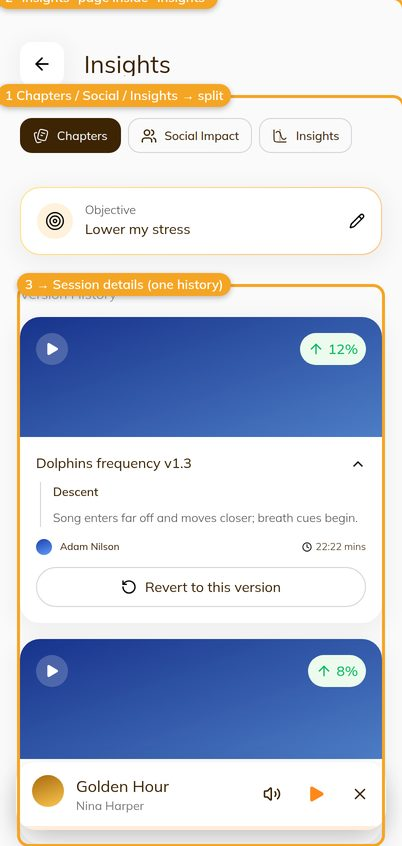
Split The Chapters / Social Impact / Insights tabs each repeat something that already has a home:
· Chapters (version history, revert) → Session details, the one history. Today it also exists in the session's Details card.
· Insights → the Analysis page.
· Social Impact (plays, recreations) → the session's stats in Session details, and your totals in Me.
Rename A page called “Insights” with a tab called “Insights” is the clearest sign the naming has drifted.
MergeVersion history: one list, in Session details.
Result: Progress → Analysis per goal, and Session details per session. Two places, each with one job.
4.5 Player: someone else's session
Today · player sheet
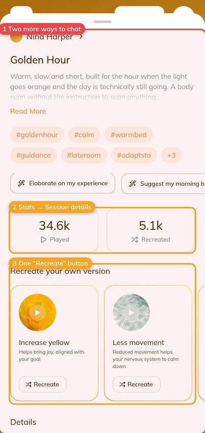
Draft · player sheet
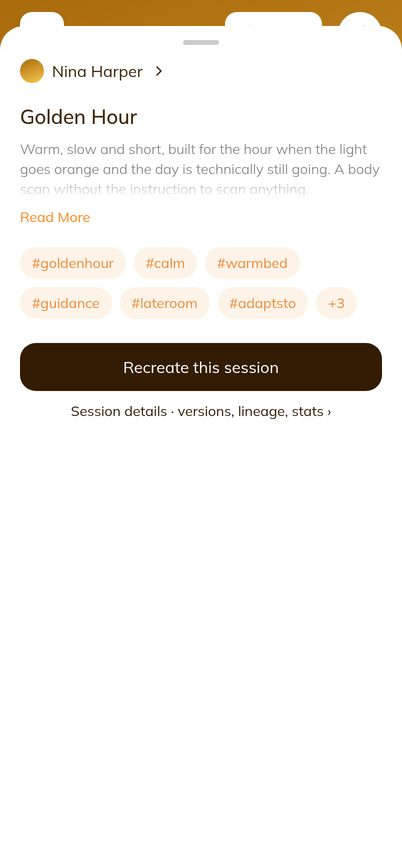
Remove“Elaborate on my experience” / “Suggest my morning boost”: two more doors into the chat while you are listening.
MovePlayed / Recreated stats, Details, versions and lineage → Session details, one link away.
Merge“Recreate your own version” (three cards, each a Recreate) → one button, Recreate this session, which opens the chat with the same choices.
Your own sessions keep the progress drawer from U041 (analytics, feedback, next chapter). That is the chapter loop, and it stays.
4.6 Chat: one list of changes
Today · chat
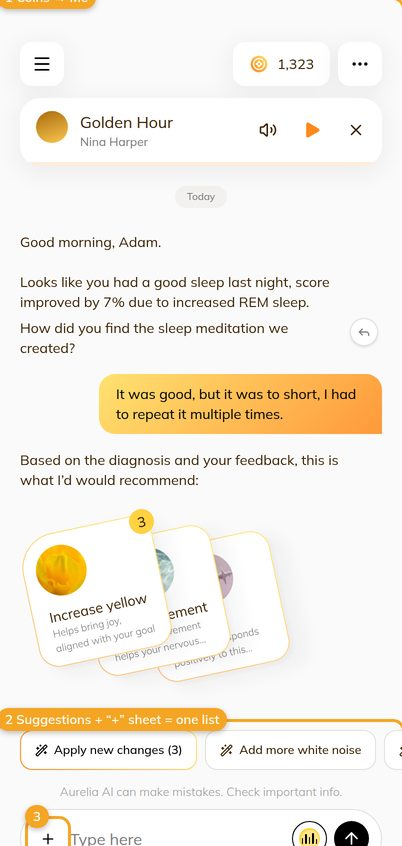
Merge Coins → Me.
MergeSuggestion chips, the recommendation deck and the “+” sheet are three ways to pick changes, from two different lists with two different scores (Increase yellow is 12% in the deck and 3% in the sheet) and two selections that do not know about each other (open item O12).
Merge Proposal: one list. Aurelia's suggestions arrive pre-selected at the top of the same sheet (with the filter added in U045), the deck opens that sheet, and Apply shows one summary (v3). The chips stay as quick replies, not as a second picker.
This is the PingPing chat that builds chapters, so it is core. The change is to the number of controls for the same action, not to the flow.
4.7 Me: one place for everything about you
Today · Profile
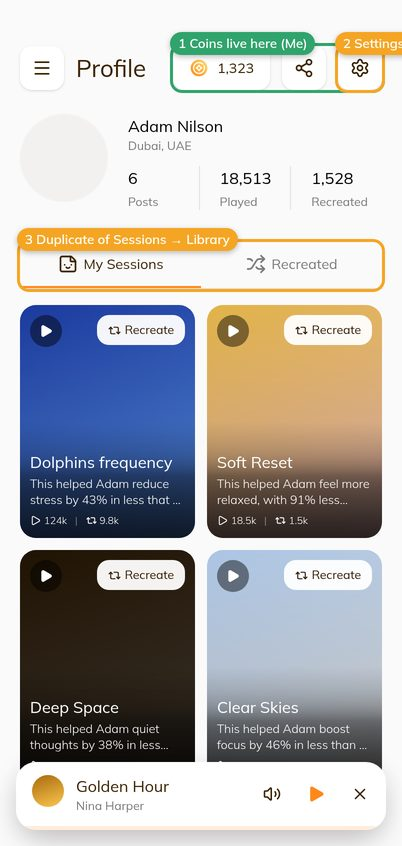
Draft · Me
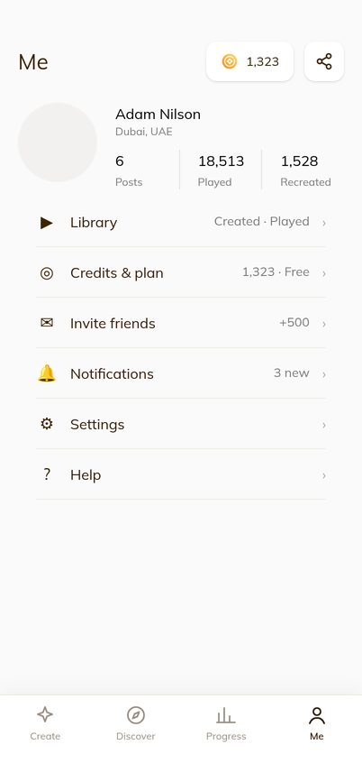
KeepCoins live here, as Credits & plan (balance, Upgrade, history). Today Credits, Upgrade and Invite are three separate screens reached from three places.
MergeSettings (the gear) becomes a row, next to Notifications, Invite and Help: everything that was in the drawer's footer.
MergeMy Sessions / Recreated duplicates the Sessions screen → Library.
Your public profile (what others see) stays as it is in Discover → creators. Me is the private side of the same account.
4.8 Sessions → Library, and two quick fixes
Today · Sessions
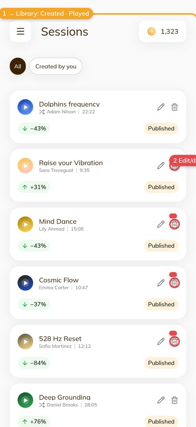
Draft · Library
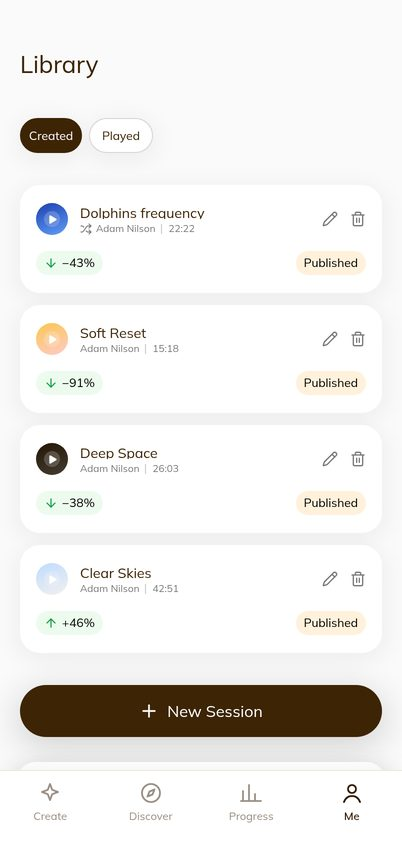
Merge“All / Created by you” → Created / Played. “All” mixes your sessions with everyone else's, which is Discover's job.
RemoveEdit and delete icons on other people's sessions. Today the list shows them on Sara's and Lily's sessions. This is a bug as much as clutter, and it can be fixed now, in every version (Phase 0).
Today · Notifications
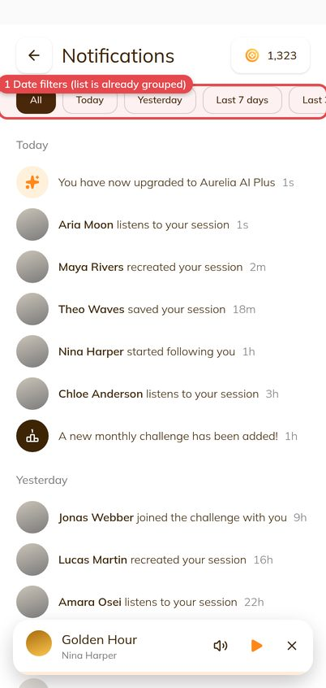
Draft · Notifications
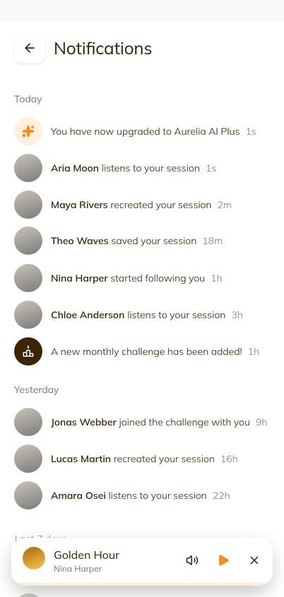
RemoveAll / Today / Yesterday / Last 7 days / Last 30 days filters. The list is already grouped under exactly those headings, so the filters only hide the headings below them.
Also Phase 0: “Settings” is the title of two different screens (account and session). The session one becomes “Edit session”.
5The plan, in phases
Phase
What
Ships as
Risk
0 · Fixes ~1 day
Hide edit/delete on others' sessions · drop the notification date filters · rename session “Settings” → “Edit session” · hide the marketing sections on Home once signed in.
All versions (bugs and clutter, no new structure)
Low. Hiding Home's marketing blocks touches the 402 px layout and needs a yes (D2).
1 · Structure ~3–4 days
Four-tab navigation · Create tab (Ask + Continue + one community shelf) · Discover without duplicates · Progress (Your goals / Data sources) · Me with Library and Credits & plan · coins only in Me.
Design v5 on staging (v5 = v4 + this)
Medium. It is the mobile layout change (D1); people must find what moved, which the move list in section 6 covers.
2 · One place per thing ~2–3 days
Retire the Insights page: chapters to Session details, insights to Analysis, social impact to stats · simplify the player sheet for others' sessions (one Recreate).
v5
Medium. Links into the Insights page need redirects.
3 · Chat ~2 days
One list of changes (suggestions pre-selected in the “+” sheet, the deck opens it), one score per change, one selection (O12).
v5
Medium. It is the core flow, so verify with the click-insights tool before and after.
Each phase gets its own entries in the update log, with a patch and a revert. Production stays on v2 until someone asks to promote v5. Every phase is checked at 402 px and 1280 px, and the Flutter client follows once the web version is agreed (it is the reference).
How we will know it worked
Click insights (already recording on staging) gives a before and after without new tooling:
Signal
Today (v4)
Target (v5)
Taps from opening the app to the first message sent in a new session
measure
fewer
Share of sessions that open the hamburger menu, against tab taps
measure
tabs replace the menu
Dead and rage taps on Home, Explore and the player sheet
measure
fewer
Share of visits that reach Progress or Discover at least once
measure
higher
6Nothing core is removed: where everything goes
Feature
Today
After
Create a session in chat, build chapters, version history
Home (7 entry points), drawer, chat, Insights page, Session details
Create tab · chat · Session details (history)
Quick Start templates
Home, Explore
Example prompts in Ask
Community generations, Recreate
Home, Explore, player, session detail
Discover · one Recreate button on player and details
Profiles and creators
Explore, profile pages
Discover → creators · your own in Me
Live sessions map
Home, Explore
Discover
Monthly challenge
Explore, challenge page
Discover (unchanged)
Analytics (goals, analysis, chapters, prediction)
My Wellness, Analysis, player drawer, Insights page
Progress → Analysis · player peek
Third-party data sources
My Wellness → Connect
Progress → Data sources
Feedback after listening
Player drawer (U041)
Unchanged
Coins, credits, upgrade, invite
Every header, Credits, Upgrade, Invite, drawer
Me → Credits & plan · Invite
Your sessions, recently played
Sessions, Profile, Explore
Me → Library (Created / Played)
Notifications
Drawer bell
Me (with an unread dot on the tab)
Settings, edit session, help, onboarding replay
Profile gear, chat menu, drawer
Me · “Edit session” in the chat menu
Sign-up pitch, feature list, “Start your Journey”
Home for everyone
Home for signed-out visitors only
7Decisions needed before any code
D1 · Four bottom tabs on mobile
The biggest single simplification, and a change to the frozen 402 px layout. It ships as v5 on staging only. Approve?
D2 · Hide the marketing sections on Home once signed in
They stay for visitors. This can ship in Phase 0, before v5. Approve?
D3 · Data sources under Progress
Data sources sit inside Progress, beside the analytics they improve, rather than as a fifth tab. Eugene lists the ecosystem as a core feature, so if it should be a tab of its own, say so. Progress, or its own tab?
D4 · Coins only in Me
The balance shows only in Me, plus in context where coins are earned (invite, challenge). Approve?
D5 · Retire the Insights page
Its three tabs move to Session details, Analysis and stats; old links redirect. Approve?
D6 · One list of changes in the chat
Also settles O12: which score is right, 12% or 3%, and should the deck and the sheet share one selection? Approve, and pick the scores?
D7 · Figma
The drafts here are structural. The tab bar, the “Continue” card and the Me list need a designer's pass in Figma before Phase 1 is built to the pixel, as every other screen has been. Who, and when?
AAppendix: every screen studied (today, v4, 402 px)
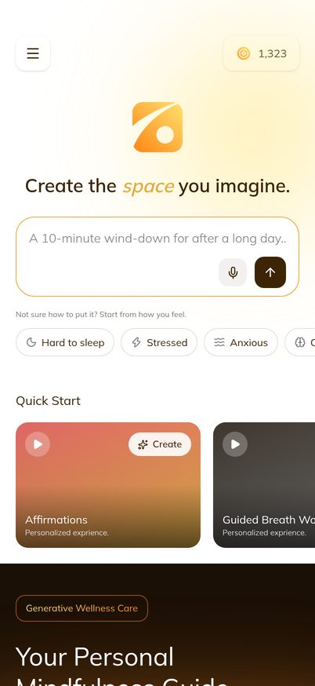
Home
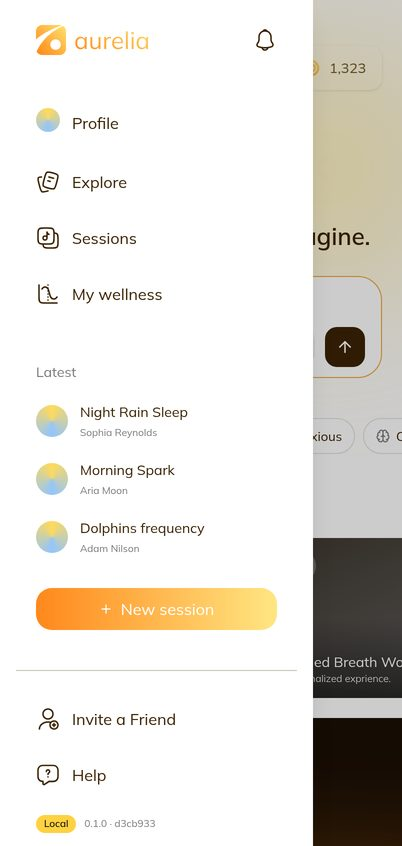
Drawer
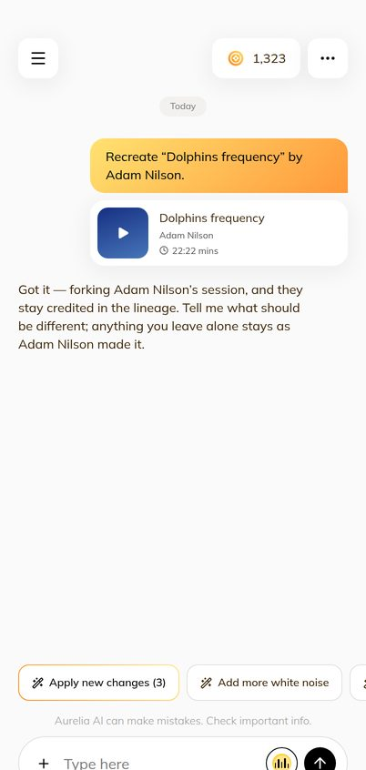
Chat
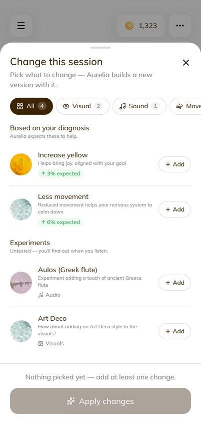
Chat “+” sheet
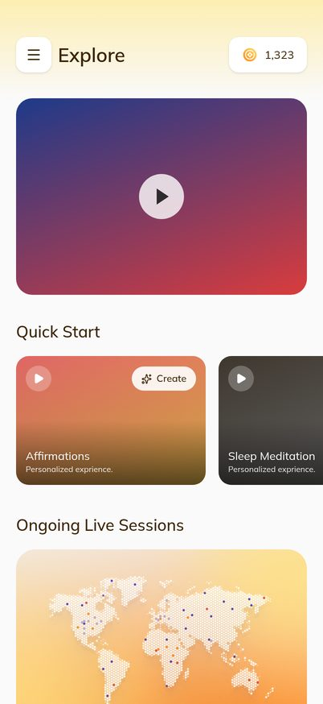
Explore
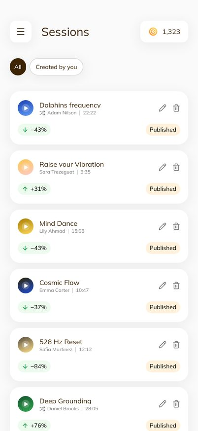
Sessions
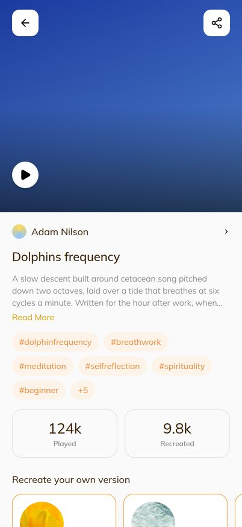
Session detail
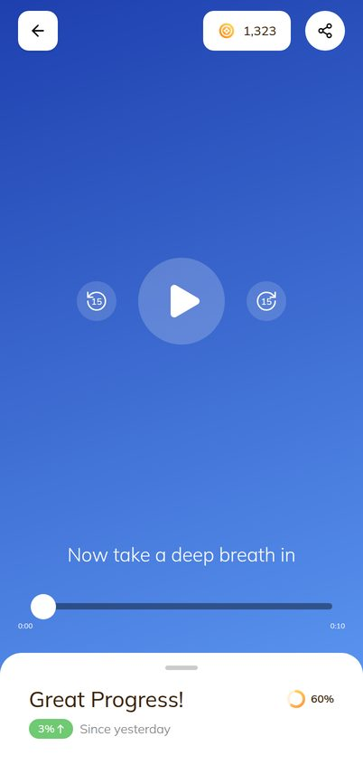
Player (own)
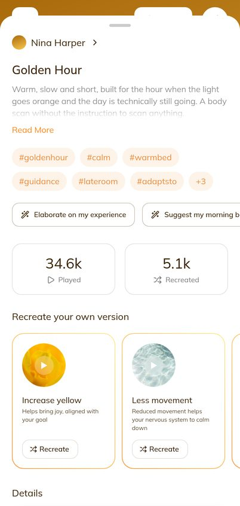
Player (others)
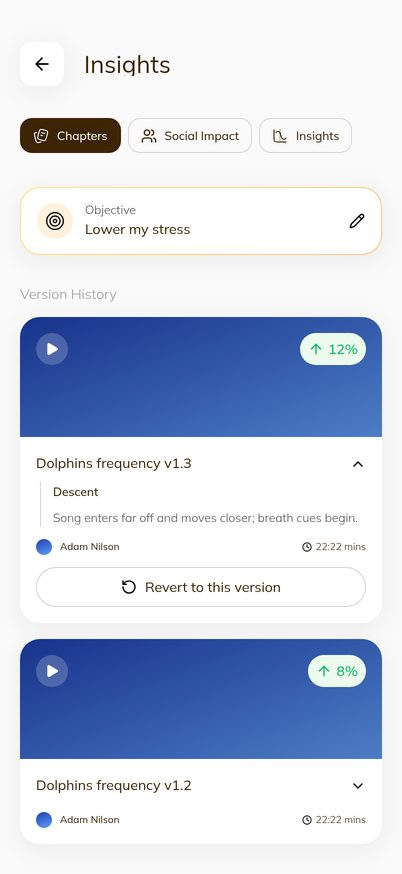
Insights page
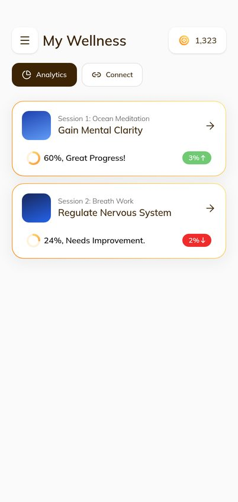
My Wellness
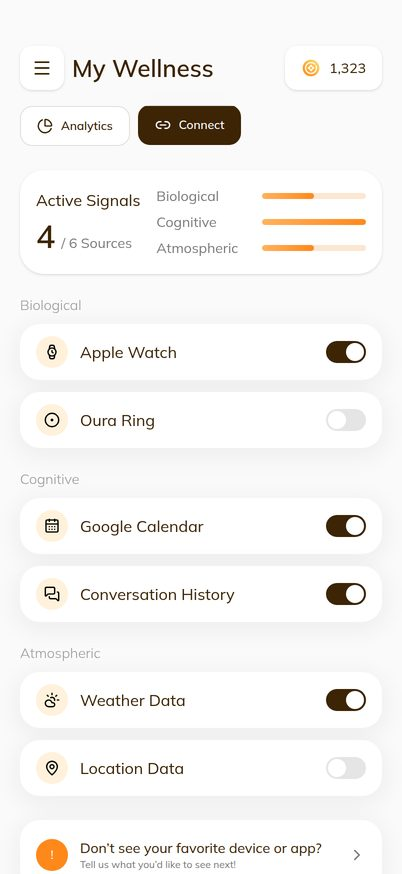
Connect
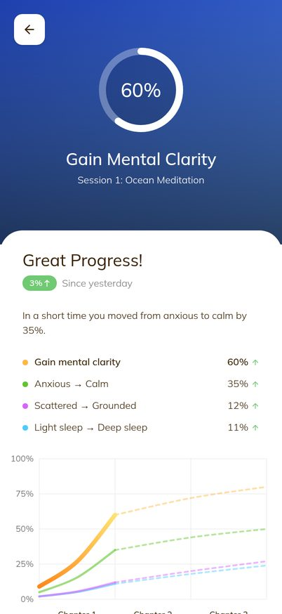
Analysis
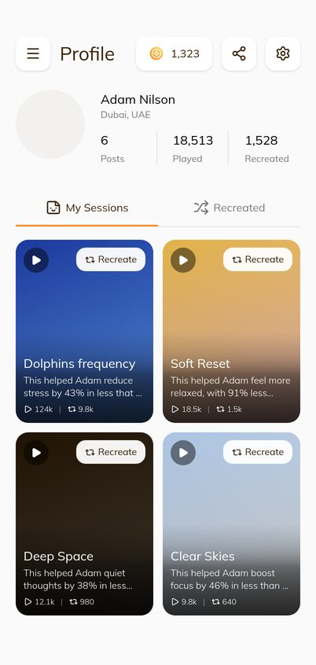
Profile
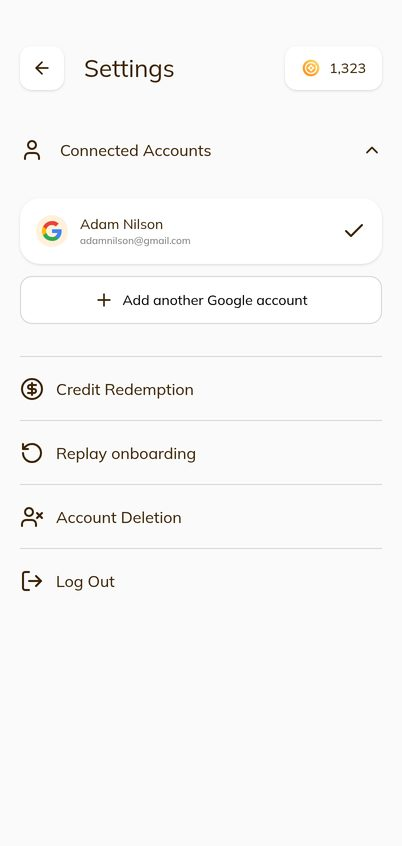
Settings
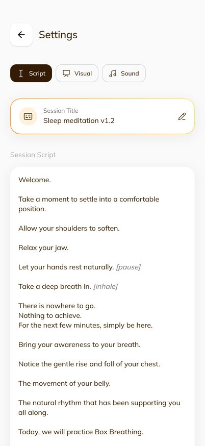
Session settings
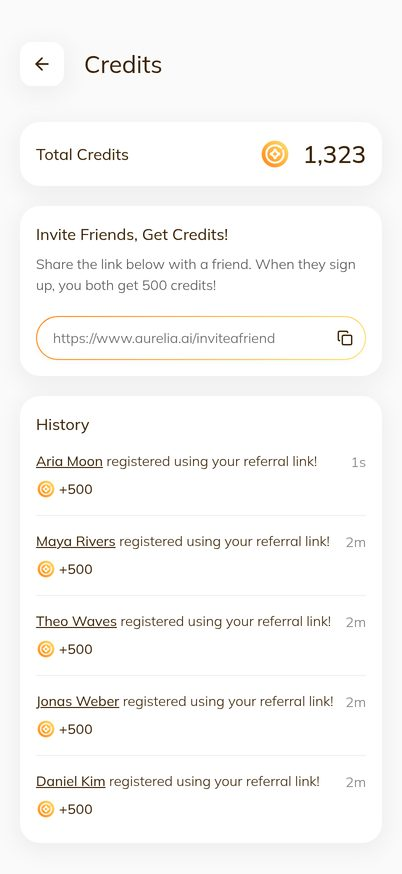
Credits
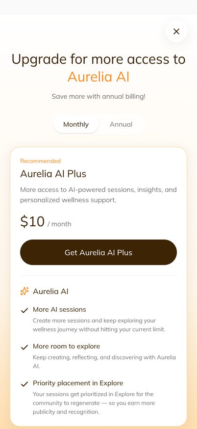
Upgrade
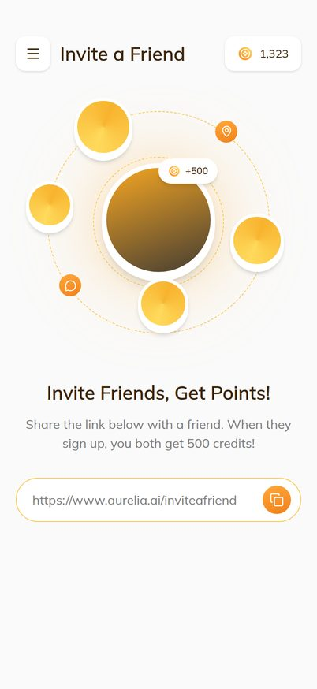
Invite
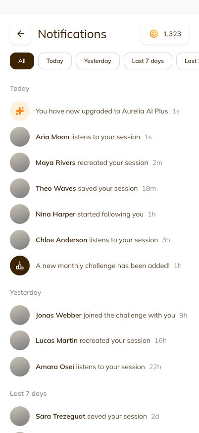
Notifications
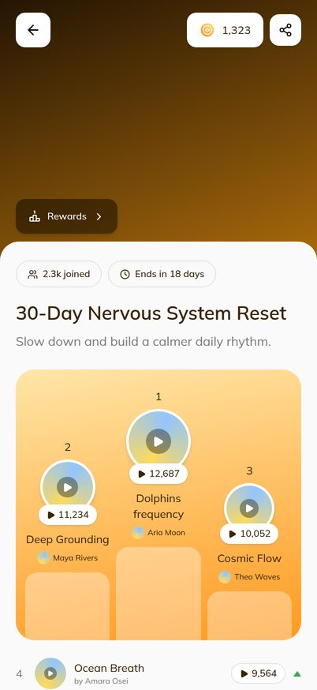
Challenge
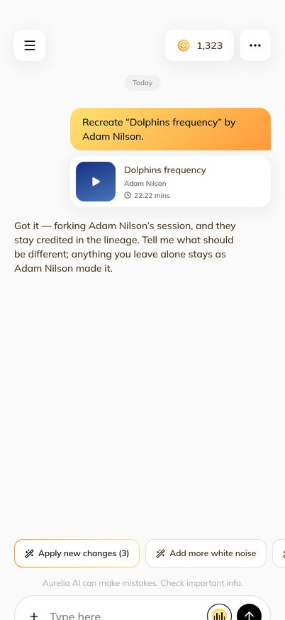
Recreate
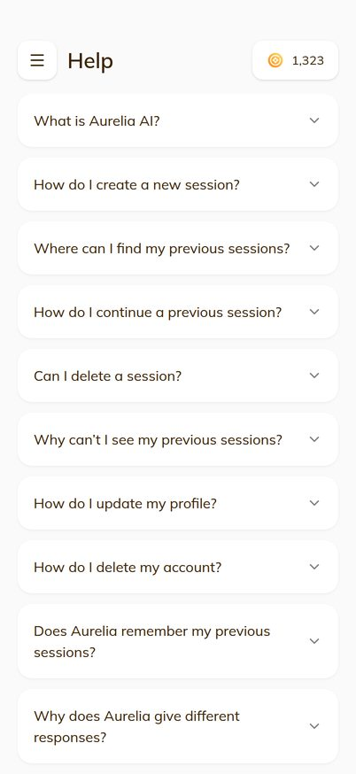
Help
Source: the staging build at commit fe0300a (U049), signed in, onboarding done, cover photos offline (the token gradients show instead). Drafts are browser edits to that build, not code. The HTML source of this document sits beside the PDF in docs/reviews/.